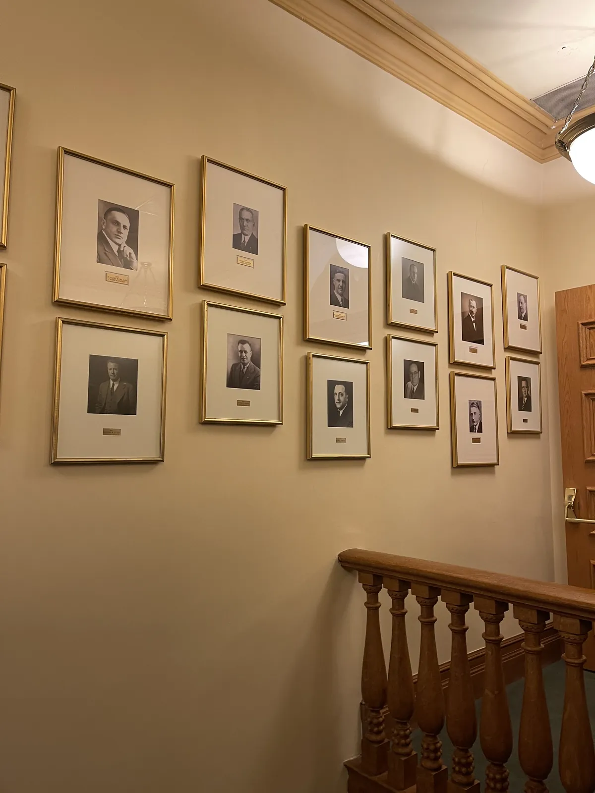

Introduction
Susan Annette Berube-Leiva (Susie):
Susan Annette Berube-Leiva (Susie):
Storyteller, Student, Activist.
Exploring the intersection of literature, news, and the human experience through long-form journalism and visual documentation.
Featured Written Works
Explore all archivesEverything is Political: Contemporary Issues (Blog)
An exploration of the underlying political currents in modern everyday topics.
Read Article arrow_forward"Journalism is the first rough draft of history, but literature is the ink that makes that history felt by the human heart."
Photography Highlights
Curated 2026 Collection